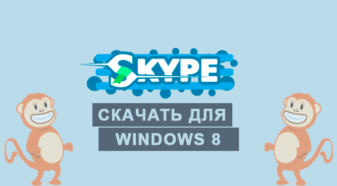

|  | Категория: | Общение |
| Поддерживаемые ОС: | Windows 8 | |
| Разрядность: | 32 bit, 64 bit, x32, x64 | |
| Для устройств: | Компьютер | |
| Язык интерфейса: | на Русском | |
| Версия: | Последняя | |
| Разработчик: | Microsoft — Skype Limited |
Skype для Windows 8 скачать бесплатно не составит труда, со времен осуществления поддержки Windows 8 Скайп во многом преобразился, его функционал был дополнен новыми фишками, в том числе и платными, а его интерфейс был осовременен, из-за чего он стал более интуитивно понятным. Технологии передачи данных, сообщений и звонков со временем так же изменялись и улучшались. На май 2020 года Скайп стал самым популярным мессенджером в сфере видео онлайн общения для ПК и одним из самых популярных мессенджеров на других платформах.
 |
 |
 |
Скайп для Windows 8 на компьютер
Сервера Microsoft расставлены по всему миру, благодаря чему у вас есть возможность без задержек общаться с людьми на том конце мира, причем вам не понадобится высокосортной интернет или дополнительная плата за роуминг. Звонить можно как одному другу, так и группе людей, одновременно транслируя картинку с вашей веб-камеры или экрана компьютера. Удаленное общение с друзьями, онлайн конференции и обучение – все это возможно со Скайпом.

Если не хотите общаться в онлайн звонках, просто напишите своему другу личное сообщение в чат. Он здесь удобен и многофункционален. Есть своя система обмена файлов и другой информацией. Для выражения своих эмоций вы можете пользоваться местными смайликами или гифками, у которых есть собственный поисковик. Общение в чате защищено, никто кроме вашего собеседника не сможет его прочитать.
Скайп для версий windows:
Скачать Skype для Windows 8 бесплатно
| Приложение | OS | Распаковщик | Формат | Версия | Загрузка |
|---|---|---|---|---|---|
| Skype (Скайп) | Для Windows 8 | OpenBox | x32 | Бесплатно (на русском) | |
| Skype (Скайп) | Для Windows 8 | OpenBox | x64 | Бесплатно (на русском) | |
| Skype (Скайп) | Для Windows 8 | OpenBox | x32 — x64 | Бесплатно (на русском) |
Как установить Скайп для windows 8:
Запустите файл.

Ознакомьтесь с информацией и нажмите "Далее".

Нажмите "Далее", или снимите галочки с рекомендуемого ПО и нажмите "Далее". Если снять все галочки, рекомендуемое ПО не установится!

После всех шагов нажмите "Установить".

Тут же есть и проработанные группы. Создавайте групповые чаты с друзьями, коллегами и подписчиками, обсуждайте текущий проект или смейтесь над смешными картинками, попутно обсуждая их в общем чате. Модераторам подобных чатов Скайп выдает полный функционал для работы с участниками группы. Если же модераторы не справляются, просто добавьте в чат бота, который будет выполнять работу за вас.
Скайпом пользуюсь много лет.
Спасибо огромное за инструкцию! А то для таких чайников как я это вечная проблема что то самостоятельно установить!
Общаюсь по скайпу с родителями мужа, очень удобно когда родственники далеко и есть возможность постоянного онлайн общения. На день рождение дочери включают конференц-связь и казалось как будто они рядом.
болтаю часто по видео чату
Всё-таки удобнее скайпа пока что ничего не придумали.
Спасибо, всё работает.
Программе уже сколько лет, а популярностью пользоваться не перестает.
Win 8, на мой взгляд, не уступает Win 7 и 10, а наоборот.
Помогал установить брату для занятий математикой!
обновления и дополнения функционала ощутимы.
пользуюсь давно
Установила САМА и с первого раза ))))). Блин!
удобен в работе.